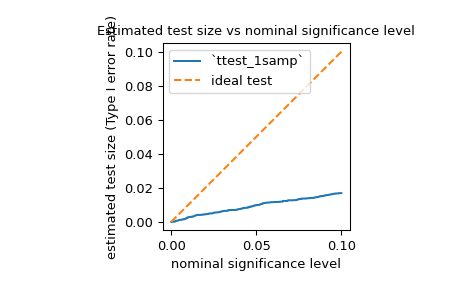

Simulate the power of a hypothesis test under an alternative hypothesis.
Parameters:
testcallable
Hypothesis test for which the power is to be simulated.
test must be a callable that accepts a sample (e.g. test(sample))
or len(rvs) separate samples (e.g. test(samples1,sample2) if
rvs contains two callables and n_observations contains two values)
and returns the p-value of the test.
If vectorized is set to True, test must also accept a keyword
argument axis and be vectorized to perform the test along the
provided axis of the samples.
Any callable from scipy.stats with an axis argument that returns an
object with a pvalue attribute is also acceptable.
rvscallable or tuple of callables
A callable or sequence of callables that generate(s) random variates
under the alternative hypothesis. Each element of rvs must accept
keyword argument size (e.g. rvs(size=(m,n))) and return an
N-d array of that shape. If rvs is a sequence, the number of callables
in rvs must match the number of elements of n_observations, i.e.
len(rvs)==len(n_observations). If rvs is a single callable,
n_observations is treated as a single element.
n_observationstuple of ints or tuple of integer arrays
If a sequence of ints, each is the sizes of a sample to be passed to test.
If a sequence of integer arrays, the power is simulated for each
set of corresponding sample sizes. See Examples.
significancefloat or array_like of floats, default: 0.01
The threshold for significance; i.e., the p-value below which the
hypothesis test results will be considered as evidence against the null
hypothesis. Equivalently, the acceptable rate of Type I error under
the null hypothesis. If an array, the power is simulated for each
significance threshold.
kwargsdict, optional
Keyword arguments to be passed to rvs and/or test callables.
Introspection is used to determine which keyword arguments may be
passed to each callable.
The value corresponding with each keyword must be an array.
Arrays must be broadcastable with one another and with each array in
n_observations. The power is simulated for each set of corresponding
sample sizes and arguments. See Examples.
vectorizedbool, optional
If vectorized is set to False, test will not be passed keyword
argument axis and is expected to perform the test only for 1D samples.
If True, test will be passed keyword argument axis and is
expected to perform the test along axis when passed N-D sample arrays.
If None (default), vectorized will be set True if axis is
a parameter of test. Use of a vectorized test typically reduces
computation time.
n_resamplesint, default: 10000
Number of samples drawn from each of the callables of rvs.
Equivalently, the number tests performed under the alternative
hypothesis to approximate the power.
batchint, optional
The number of samples to process in each call to test. Memory usage is
proportional to the product of batch and the largest sample size. Default
is None, in which case batch equals n_resamples.
Returns:
resPowerResult
An object with attributes:
powerfloat or ndarray
The estimated power against the alternative.
pvaluesndarray
The p-values observed under the alternative hypothesis.
Notes
The power is simulated as follows:
Draw many random samples (or sets of samples), each of the size(s)
specified by n_observations, under the alternative specified by
rvs.
For each sample (or set of samples), compute the p-value according to
test. These p-values are recorded in the pvalues attribute of
the result object.
Compute the proportion of p-values that are less than the significance
level. This is the power recorded in the power attribute of the
result object.
Suppose that significance is an array with shape shape1, the elements
of kwargs and n_observations are mutually broadcastable to shape shape2,
and test returns an array of p-values of shape shape3. Then the result
object power attribute will be of shape shape1+shape2+shape3, and
the pvalues attribute will be of shape shape2+shape3+(n_resamples,).
Examples
Suppose we wish to simulate the power of the independent sample t-test
under the following conditions:
The first sample has 10 observations drawn from a normal distribution
with mean 0.
The second sample has 12 observations drawn from a normal distribution
with mean 1.0.
The threshold on p-values for significance is 0.05.
With samples of size 10 and 12, respectively, the power of the t-test
with a significance threshold of 0.05 is approximately 60% under the chosen
alternative. We can investigate the effect of sample size on the power
by passing sample size arrays.
>>> importmatplotlib.pyplotasplt>>> nobs_x=np.arange(5,21)>>> nobs_y=nobs_x>>> n_observations=(nobs_x,nobs_y)>>> res=stats.power(test,rvs,n_observations,significance=0.05)>>> ax=plt.subplot()>>> ax.plot(nobs_x,res.power)>>> ax.set_xlabel('Sample Size')>>> ax.set_ylabel('Simulated Power')>>> ax.set_title('Simulated Power of `ttest_ind` with Equal Sample Sizes')>>> plt.show()
Alternatively, we can investigate the impact that effect size has on the power.
In this case, the effect size is the location of the distribution underlying
the second sample.
We can also use power to estimate the Type I error rate (also referred to by the
ambiguous term “size”) of a test and assess whether it matches the nominal level.
For example, the null hypothesis of jarque_bera is that the sample was drawn from
a distribution with the same skewness and kurtosis as the normal distribution. To
estimate the Type I error rate, we can consider the null hypothesis to be a true
alternative hypothesis and calculate the power.
As shown below, the Type I error rate of the test is far below the nominal level
for such a small sample, as mentioned in its documentation.
>>> ax=plt.subplot()>>> ax.plot(significance,size)>>> ax.plot([0,0.1],[0,0.1],'--')>>> ax.set_xlabel('nominal significance level')>>> ax.set_ylabel('estimated test size (Type I error rate)')>>> ax.set_title('Estimated test size vs nominal significance level')>>> ax.set_aspect('equal','box')>>> ax.legend(('`ttest_1samp`','ideal test'))>>> plt.show()

As one might expect from such a conservative test, the power is quite low with
respect to some alternatives. For example, the power of the test under the
alternative that the sample was drawn from the Laplace distribution may not
be much greater than the Type I error rate.
This is not a mistake in SciPy’s implementation; it is simply due to the fact
that the null distribution of the test statistic is derived under the assumption
that the sample size is large (i.e. approaches infinity), and this asymptotic
approximation is not accurate for small samples. In such cases, resampling
and Monte Carlo methods (e.g. permutation_test, goodness_of_fit,
monte_carlo_test) may be more appropriate.